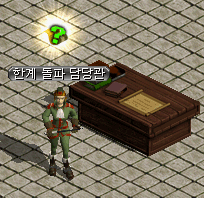

韓国 2015年7月29日アップデート
※韓国公式と韓国人プレイヤーから頂いた情報を基にしています。誤訳や韓国独自仕様の可能性もありますので、予めご了承下さい。2015年7月29日 韓国アップデートの変更内容一覧
新秘密ダンジョンバッジ
ギルドダンジョンB8実装
冒険家協会の改編
メインクエスト改編
ワールドチャット機能・冒険家掲示板
オート申告システム
夏休みイベント
新秘密ダンジョンバッジ
お手伝い用バッジと「挑戦の冒険家バッジ」の上位版が販売開始されました。
 |
同行の秘密ダンジョンバッジ 仲間と共にどんな秘密ダンジョンでも探索するという冒険家の意志が込められたバッジ。このバッジを所持していれば、自分のレベルより制限レベルの低い秘密ダンジョンに1日3回追加で入場することができる。 ※クリア経験値および報酬はもらえません。 有効期限15日間 （1100ウォン） |
 |
逆境の秘密ダンジョンバッジ 自分のレベルより 60レベル高い秘密ダンジョンに入場できるようにする 有効期限3日間 （5900ウォン） |
 |
苦難の秘密ダンジョンバッジ 自分のレベルより 90レベル高い秘密ダンジョンに入場できるようにする 有効期限3日間 （8900ウォン） |
※参考価格
「挑戦の冒険家バッジ」（日本版 15日間 700GEM）は、韓国では有効期限3日間 1600ウォン。
ギルドダンジョンB8実装
待望の古代都市タティリス遺跡 Ｂ８がついに実装されました。

| 適正Lv | 801〜900 |
|---|---|
| モンスターLv | 840〜900 |
| 入場条件 | ホールランク5以上で入場券を購入、またはコスミックストーンを所持 |
冒険家協会の改編
冒険家協会ブルンネンシュティグ本部

冒険に役立つ便利なNPCを協会本部に集約し、より利便性の高い施設になりました。
クエスト案内所
限界突破クエスト案内人、称号クエスト案内人、転生クエスト案内人などの各NPCからクエスト受諾場所まで無料で移動することができます。
称号クエスト案内人は、次に受けるべき称号Lvにあった場所へ自動で移動させてくれます。
転生クエスト案内人からは、転生可能Lvに達していなくても荒廃都市ダメルへ移動できるので、メインクエストなどの移動にも利用できます。



商店街
ソラ、武器職人サナ、武器職人タポ、デザイナーユノ、ドギ・タニア、恩寵商人など狩りに欠かせない商人達が一堂に集結。


 |
恩寵商人では、 恩寵の魔石（2万G/個）が販売されています。 |
 |
恩寵の魔石 使用すると恩寵効果が発動する魔石。 効果時間はスキルポイントアップ時の持続時間と同様。 |
図書館
初心者向けゲームシステムの説明を見ることができます。

酒場

各街の冒険家協会の移動ポータルから酒場へ入ることができます。
どの冒険家協会から移動しても同じ酒場に集まることができますが、酒場から出るときは冒険家協会ブルンネンシュティグ本部に出ます。
場所記憶可能、絨毯の使用は不可。
 |
ロビー 秘密ダンジョンを探索する仲間を集める場所。 また、ギルドホールテレポーターから各ギルドホールへ移動することができます。 |
 |
ジョン・マルコの秘密ダンジョン案内所 ジョン･マルコが秘密ダンジョンの入口のあるマップまで無料で移動させてくれます。 適正Lvに関わらず全ての一般秘密ダンジョンから選択することができるので、クエストなどの移動にも利用できます。 |
 |
メインクエスト報酬案内所 週に1回のみ魔法溶液（？）をより簡単に完成させることができる材料が販売されます。 また、完成したRED STONEを渡すために会いに行かなければならない秘密の山荘のアイノ・ガスピルと港町ボルティッシュのアンジーまでNPCが移動させてくれます。 （メインクエストChapter 5受諾者のみ利用可能） |
メインクエスト改編
変更事項
・クエストアイテムのドロップ率を上方修正
・モンスターの必要討伐数が非常に多かったクエストの討伐数を下方修正
・スウェブタワー ２０Ｆへのテレポーター配置
・移動距離が非常に長い一部クエストの移動が簡単にできるように変更
・ミニマップ上に正しく表示されていなかったNPCやモンスターの位置表示を修正
・クエスト説明分の不足や誤りを追記・修正
 |
スウェブタワーの入口前に移動支援NPCが 配置されました。 |
 |
スウェブタワー ２０Ｆまで3000Gで 移動可能。 またファーストポータルを開いて各マップへ 移動することができます。 メインクエスト進捗状況に関わらず利用可能。 |
 |
やぶ森の中のやぶドーナツにいたファーブ （メインクエスト2-3-7）は、鉄の道 / 道の中間地点のやぶ森の中への入口前に移動しました。 |
Chapter 1-5 「アイノの報告書」では、一部マップへクリスティラが自動でワープさせてくれるようになりました。
メインクエスト1-5-1 廃坑 Ｂ５
メインクエスト1-5-5 廃坑 Ｂ７
メインクエスト1-5-6 キャンサー気孔 Ｂ７
メインクエスト1-5-7 スウェブタワー １７Ｆ

また韓国 2015.6.10アップデートにて、東プラトン街道 / 道の中間地点（メインクエスト2-3-1 シーフ50匹）やガディウス大砂漠 / デフヒルズ北側（メインクエスト1-8-7 ゴブリン50匹）などのメインクエスト関連マップにミラーテレポータが配置され、ミラーダンジョンが追加されました。
移動サポート機能によりマップ移動時間は短縮されて多少楽になりますが、アイノの報告書や火酒倉庫などのクエスト内容・報酬に変更はありません。
行ったり来たりのお使いクエストは相変わらずです…。
ワールドチャット機能・冒険家掲示板
ワールドチャットとは、サーバー内の全てのマップにいるプレイヤーに表示される叫び機能です。
"!!"をつけて発言することで、ワールドチャットを使用することができます。
1日2回ずつ無料充電され、2日間で最大4回まで充電されます。（キャラクター毎）
無料回数を使いきってしまった場合は、課金アイテム「ブラシの叫び」で使用回数を増やすことができます。
 |
「ワールドチャット残数 : 0~4回」がログイン時に、 ワールドチャット使用時に残数[0~3]が表示されます。 |
 |
ブラシの叫び 使用時、ワールドチャット使用可能回数が 5回増加する ※1個あたり5回ずつ最大200回まで充電可能 1000ウォン |
 |
さらに、既存のチャットウィンドウ上に冒険家掲示板UIが追加されました。 ログイン時に15秒間メッセージが表示されます。 |
 |
冒険家掲示板 冒険家掲示板に話したいことを記載することができる。(ハングル30字、英文60字) ※チャットウィンドウ上の冒険家掲示板に15秒間話したいことを記載する 5000ウォン |
オート申告システム
オート/マクロプレーが疑われるユーザーをより早く簡単に申告できるシステムが追加されました。
 |
キャラクターをシフト+右クリックしてオート申告を選択 |
 |
申告されたプレイヤーはテキスト画像を入力します。 180秒以内に正しく入力できなかった場合や、5回間違えると強制的に切断されます。 |
 |
正しく入力し疑いの晴れたキャラクターにはお詫びとして、 [お詫びの気持ち]バフが付与されます。 300秒間すべてのスキルレベル +1 回避/命中率 5％増加 |
夏休みイベント
メインクエスト報酬をもう一つ！ 7月29日〜9月9日
期間中にメインクエストChapter 5を完了すると、報酬アイテムをもう一つ追加で受け取ることができます。
ただし、善悪値やゴールドは通常通り2個分消費されます。
モンスターが押し寄せる！ 7月29日〜9月9日
指定した時間に各街に侵攻してくるモンスターをすべて倒すと、ボスモンスターが出現！
ボスモンスターを討伐すると、ユニークアアイテムチケットやスキル/ステータス再配分巻物などがドロップします。
熱々参鶏湯を作ろう！ 7月29日〜9月9日
レベル差100以内のモンスターを倒すと、一定確率で参鶏湯（サムゲタン）がドロップします。
そのまま食べても美味しいですが、首/手羽/腿/カルビ/胸の5部位を5個ずつ集めて参鶏湯[1匹]を作ると、熱血の指輪や希望の指輪と交換することができます。
Hotな夏の必須アイテム！水着コスチューム限定パッケージ販売 7月29日〜9月9日
限定パッケージ内容
・水着コスチューム
・クレストボックス 3個 （中級または上級クレストがランダムで出現）
・クレスト合成ボックス 3個